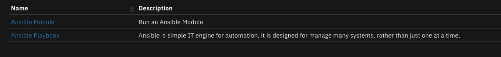
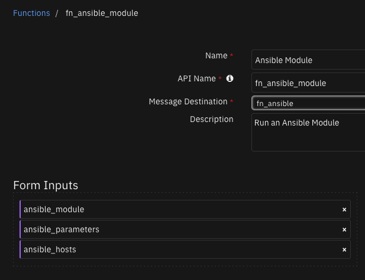
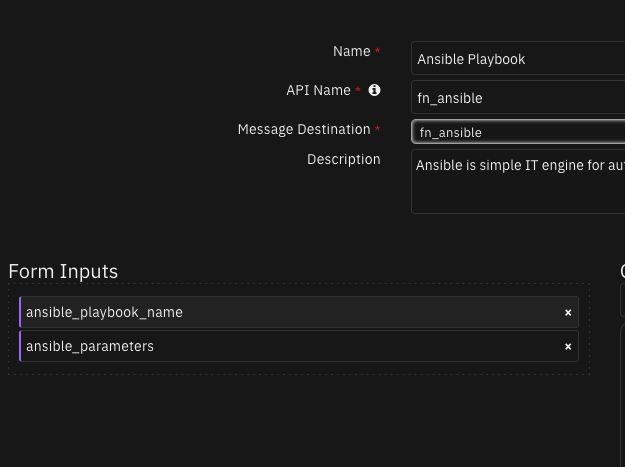

Ansible for SOAR¶
Table of Contents¶
Release Notes¶
Version |
Date |
Notes |
|---|---|---|
1.2.0 |
05/2024 |
Refresh the integration. Convert rule/workflows to playbooks. |
1.1.1 |
04/2021 |
Support for App Host. |
1.1.0 |
11/2019 |
Change result payload format to JSON returned to SOAR. |
1.2.0 Changes¶
In v1.2, the existing rules and workflows have been replaced with playbooks. This change is made to support the ongoing, newer capabilities of playbooks. Each playbook has the same functionality as the previous, corresponding rule/workflow.
If upgrading from a previous release, you’ll noticed that the previous release’s rules/workflows remain in place. Both sets of rules and playbooks are active. For manual actions, playbooks will have the same name as it’s corresponding rule, but with “(PB)” added at the end. For automatic actions, the playbooks will be disabled by default.
You can continue to use the rules/workflows. But migrating to playbooks will provide greater functionality along with future app enhancements and bug fixes.
Overview¶
Run Ansible Playbooks and Modules

This app runs the Ansible environment to allow the running of playbooks and modules against your enterprise. Specify the playbooks, hosts and environment variables necessary for execution.
Key Features¶
Run pre-written Ansible Playbooks from the SOAR platform, using parameter substitution.
Run Ansible Modules for ad-hoc command execution.
Run SOAR playbooks at the Incident and Artifact levels.
Additional documentation on Ansible can be found at the Ansible website.
App Host Installation¶
All the components for running Ansible in a container already exist when using the App Host app. The remainder of this section details the Ansible configuration file changes.
Under the Configuration Tab for an App, build out the ansible-runner files needed per the ansible-runner convention. The necessary files are the hosts file, ssh_key and your yml playbooks. Build these files under /var/rescircuits/ansible and ensure that the app.config file contains the same reference:
[fn_ansible]
runner_dir=/var/rescircuits/ansible
artifact_dir=/tmp
Ansible Playbooks¶
When adding Ansible playbooks through the Configuration tab of an App, ensure the File Path is /var/rescircuits/ansible/project.
Note: Ansible playbooks and modules cannot be run within the container environment.
The minimum Ansible files needed are:
hosts, and
playbooks
Your environment may require more configuration files, such as ssh_key and envvars.
This is an example of the configuration files used including several yaml files.

If you require additional ansible modules, additional effort is needed to include them as files in the Configuration tab.
Limitations¶
Presently, there are limitations in the use of containers when Ansible playbook parameters sent from SOAR
are used with any file defined in /var/rescircuits/ansible/env.
Integration Server Installation¶
Prerequisites:¶
This integration relies on the installation of the ansible solution on the integration server. The process of installing ansible can be followed here.
ansible >= 2.8.1
ansible-runner >= 2.3.6
SOAR platform >= v50.0.0
Integrations Server Resilient Circuits >= v50.0.0
Ansible config directory per the ansible-runner convention
Ansible relies on a system library
sshpass. Depending on your Integration Server operation system, different procedures are required to install this system library.For RHEL servers, the Red Hat Developer Toolset is needed to build the ansible runtime environment. This may also require a registered subscription manager to install.
This package requires that it is installed on a RHEL or CentOS platform and uses the Resilient Circuits framework.
Unzip the package downloaded from the IBM App Exchange
$ unzip app-fn_ansible-<version>.zip
To install the package, run:
$ [sudo] pip install fn_ansible-<version>.tar.gz
To import the function, example rules and workflows into your SOAR platform, run:
$ resilient-circuits customize -l fn-ansible
To update your
app.configfile with the required Ansible configurations, run:$ resilient-circuits config -u -l fn-ansible
Within the
app.configfile, edit the following configuration data:[fn_ansible] runner_dir=</full/path/to/your/ansible/directory> # temporary files collected when running a module or a playbook artifact_dir=</full/path/to/artifacts/directory> # change this value to trim the collection of previous process runs artifact_retention_num=0
To uninstall:
$ [sudo] pip uninstall fn-ansible
Run Resilient Circuits:
$ resilient-circuits run
Requirements¶
This app supports the IBM Security QRadar SOAR Platform and the IBM Security QRadar SOAR for IBM Cloud Pak for Security.
SOAR platform¶
The SOAR platform supports two app deployment mechanisms, Edge Gateway (also known as App Host) and integration server.
If deploying to a SOAR platform with an App Host, the requirements are:
SOAR platform >=
50.0.9097.The app is in a container-based format (available from the AppExchange as a
zipfile).
If deploying to a SOAR platform with an integration server, the requirements are:
SOAR platform >=
50.0.9097.The app is in the older integration format (available from the AppExchange as a
zipfile which contains atar.gzfile).Integration server is running
resilient_circuits>=50.0.0.If using an API key account, make sure the account provides the following minimum permissions:
Name
Permissions
Org Data
Read
Function
Read
The following SOAR platform guides provide additional information:
Edge Gateway Deployment Guide or App Host Deployment Guide: provides installation, configuration, and troubleshooting information, including proxy server settings.
Integration Server Guide: provides installation, configuration, and troubleshooting information, including proxy server settings.
System Administrator Guide: provides the procedure to install, configure and deploy apps.
The above guides are available on the IBM Documentation website at ibm.biz/soar-docs. On this web page, select your SOAR platform version. On the follow-on page, you can find the Edge Gateway Deployment Guide, App Host Deployment Guide, or Integration Server Guide by expanding Apps in the Table of Contents pane. The System Administrator Guide is available by expanding System Administrator.
Cloud Pak for Security¶
If you are deploying to IBM Cloud Pak for Security, the requirements are:
IBM Cloud Pak for Security >=
1.10.15.Cloud Pak is configured with an Edge Gateway.
The app is in a container-based format (available from the AppExchange as a
zipfile).
The following Cloud Pak guides provide additional information:
Edge Gateway Deployment Guide or App Host Deployment Guide: provides installation, configuration, and troubleshooting information, including proxy server settings. From the Table of Contents, select Case Management and Orchestration & Automation > Orchestration and Automation Apps.
System Administrator Guide: provides information to install, configure, and deploy apps. From the IBM Cloud Pak for Security IBM Documentation table of contents, select Case Management and Orchestration & Automation > System administrator.
These guides are available on the IBM Documentation website at ibm.biz/cp4s-docs. From this web page, select your IBM Cloud Pak for Security version. From the version-specific IBM Documentation page, select Case Management and Orchestration & Automation.
Proxy Server¶
The app does not support a proxy server.
Python Environment¶
Python 3.6, 3.9, and 3.11 are supported. Additional package dependencies may exist for each of these packages:
ansible-runner==1.3.4; python_version==”3.6”
ansible-runner~=2.3.6; python_version>=”3.9”
ansible==2.8.3; python_version==”3.6”
ansible~=7.3.0; python_version>=”3.9”
python-daemon==2.3.2; python_version==”3.6”
python-daemon~=3.0.1; python_version>=”3.9”
resilient_circuits>=50.0.0
resilient_lib>=50.0.0
pywinrm
Installation¶
Install¶
To install or uninstall an App or Integration on the SOAR platform, see the documentation at ibm.biz/soar-docs.
To install or uninstall an App on IBM Cloud Pak for Security, see the documentation at ibm.biz/cp4s-docs and follow the instructions above to navigate to Orchestration and Automation.
App Configuration¶
The following table provides the settings you need to configure the app. These settings are made in the app.config file. See the documentation discussed in the Requirements section for the procedure.
Config |
Required |
Example |
Description |
|---|---|---|---|
artifact_dir |
Yes |
|
*Full path to artifacts directory. App Host deployments should use /tmp. * |
artifact_retention_num |
Yes |
|
Change this value to trim the collection of previous process run |
runner_dir |
Yes |
|
*Full path to the Ansible runner directory. App Host deployments should use /var/rescircuits/ansible. * |
Function - Ansible Module¶
Run an Ansible Module

Inputs:
Name |
Type |
Required |
Example |
Tooltip |
|---|---|---|---|---|
|
|
Yes |
|
host name pattern or group for module execution |
|
|
Yes |
|
command and parameters to run |
|
|
No |
|
parameters for the module separated by a semicolon (;) |
Outputs:
NOTE: This example might be in JSON format, but
resultsis a Python Dictionary on the SOAR platform.
results = {
"content": {
"52": {
"detail": "\u001b[1;35m[WARNING]: No inventory was parsed, only implicit localhost is available\u001b[0m",
"summary": "successful"
},
"localhost": {
"detail": {
"_ansible_no_log": false,
"changed": true,
"cmd": [
"echo",
"Hello",
"World!"
],
"delta": "0:00:00.062326",
"end": "2024-03-19 14:17:15.149417",
"invocation": {
"module_args": {
"_raw_params": "echo Hello World!",
"_uses_shell": false,
"argv": null,
"chdir": null,
"creates": null,
"executable": null,
"expand_argument_vars": true,
"removes": null,
"stdin": null,
"stdin_add_newline": true,
"strip_empty_ends": true
}
},
"msg": "",
"rc": 0,
"start": "2024-03-19 14:17:15.087091",
"stderr": "",
"stderr_lines": [],
"stdout": "Hello World!",
"stdout_lines": [
"Hello World!"
]
},
"summary": "successful"
}
},
"inputs": {
"ansible_hosts": "localhost",
"ansible_module": "command",
"ansible_parameters": "echo Hello World!"
},
"metrics": {
"execution_time_ms": 11817,
"host": "local",
"package": "fn-ansible",
"package_version": "1.3.0",
"timestamp": "2024-03-19 14:17:15",
"version": "1.0"
},
"raw": null,
"reason": null,
"success": true,
"version": 2.0
}
Example Function Input Script:
inputs.ansible_hosts = getattr(playbook.inputs, "ansible_hosts", None)
inputs.ansible_module = getattr(playbook.inputs, "ansible_module", None)
inputs.ansible_parameters = getattr(playbook.inputs, "ansible_module_arguments", None)
Example Function Post Process Script:
results = playbook.functions.results.module_results
if results.get("success"):
if len(results.get('content', {}).keys()) == 0:
note = f"Running Ansible module: {playbook.inputs.ansible_module}\nParameters: {results.get('inputs')}\nNo results returned."
else:
for item in results.get('content', {}):
note = "Running Ansible module: {}\nParameters: {}\nResults: {}".format(playbook.inputs.ansible_module, results.get('inputs'), results.get('content', {}).get(item, {}).get('detail'))
incident.addNote(helper.createPlainText(note))
else:
incident.addNote(f"Running Ansible Module: {playbook.inputs.ansible_module} failed with reason: {results.get('reason')}")
Function - Ansible Playbook¶
Ansible is simple IT engine for automation, it is designed for manage many systems, rather than just one at a time.

Inputs:
Name |
Type |
Required |
Example |
Tooltip |
|---|---|---|---|---|
|
|
No |
|
parameters for the playbook separated by a semicolon (;) |
|
|
Yes |
|
- |
Outputs:
NOTE: This example might be in JSON format, but
resultsis a Python Dictionary on the SOAR platform.
results = {
"content": {
"127.0.0.1": {
"detail": {
"_ansible_no_log": false,
"changed": true,
"cmd": [
"echo",
"Hello"
],
"delta": "0:00:00.012063",
"end": "2024-03-19 14:31:34.888730",
"invocation": {
"module_args": {
"_raw_params": "echo Hello",
"_uses_shell": false,
"argv": null,
"chdir": null,
"creates": null,
"executable": null,
"expand_argument_vars": true,
"removes": null,
"stdin": null,
"stdin_add_newline": true,
"strip_empty_ends": true
}
},
"msg": "",
"rc": 0,
"start": "2024-03-19 14:31:34.876667",
"stderr": "",
"stderr_lines": [],
"stdout": "Hello",
"stdout_lines": [
"Hello"
]
},
"summary": "successful"
},
"63": {
"detail": "\u001b[1;35mthe implicit localhost does not match \u0027all\u0027\u001b[0m",
"summary": "successful"
}
},
"inputs": {
"ansible_parameters": "command=echo Hello",
"ansible_playbook_name": "playbook2"
},
"metrics": {
"execution_time_ms": 11915,
"host": "local",
"package": "fn-ansible",
"package_version": "1.3.0",
"timestamp": "2024-03-19 14:31:35",
"version": "1.0"
},
"raw": null,
"reason": null,
"success": true,
"version": 2.0
}
Example Function Input Script:
inputs.ansible_playbook_name = getattr(playbook.inputs, "ansible_playbook_name", None)
artifact_value = f'artifact_value={artifact.value}'
if getattr(playbook.inputs, "ansible_playbook_variables", None):
inputs.ansible_parameters = ';'.join(getattr(playbook.inputs, "ansible_playbook_variables", None), artifact_value)
else:
inputs.ansible_parameters = artifact_value
Example Function Post Process Script:
results = playbook.functions.results.playbook_results
if results.get("success"):
if len(results.get("content", {}).keys()) == 0:
note = "No results returned on parameters: {}".format(results.get('inputs'))
else:
for item in results.get('content', {}):
note = f"{item} - {results.get('inputs')}\n{str(results.get('content', {}).get(item, {}).get('detail'))}"
incident.addNote(helper.createPlainText(note))
else:
incident.addNote(f"Running Ansible playbook: {playbook.inputs.ansible_playbook_name} failed with reason: {results.get('reason')}")
For very large data results, it may not be practical to save the results as a Note. Instead, the fn_utilities function Utilities: String to Attachment can be added to your workflow to send your Ansible results to an attachment. In this case, workflow properties are used to retain the results of this function for use by downstream functions.
Playbooks¶
Playbook Name |
Description |
Activation Type |
Object |
Status |
Condition |
|---|---|---|---|---|---|
Ansible: Run a Module - Example (PB) |
Run an Ansible module for ad-hoc operations |
Manual |
incident |
|
|
Ansible: Run a Playbook - Example (PB) |
Run a playbook from an Incident with specific hosts and parameters |
Manual |
incident |
|
|
Ansible: Run a Playbook from an Artifact - Example (PB) |
Merge artifact_value with Ansible parameters to run a Playbook |
Manual |
artifact |
|
|
Considerations¶
Only the ansible-runner
synchronouscapability is supported.Playbook and artifact names must not contain unicode characters. This is a limitation in the ansible-runner package ( <= 2.8.1) which should be resolved in a future release.
The app.config setting
artifact_retention_numis available to clean up previous execution files older than the specified days. Use a value of 0 to specify no deletion.Consider using Rule Activity Field select lists for Ansible module name and parameter restrictions. This ensures that only specific commands are used for ad-hoc executions.
Also consider using Rule Activity Field select lists for Ansible playbook names for similar reasons to ensure only specific playbooks are supported through SOAR.
The workflow associated with a module or playbook function will remain blocked until all host executions are complete and the results are returned. The ansible-runner
Asynchronousoperation corrects this restriction but remains a future enhancement.Playbooks should use the
debugstatement to return findings back to SOAR. The example below runs thefindmodule, returning the file found using the debug statement.
- hosts: "{{host_names}}"
tasks:
- name: Recursively find files
find:
paths: "{{path}}"
age: "{{age}}"
recurse: yes
pattern: '*'
register: files_matched
- debug:
msg: "{{ files_matched.files }}"
App Host sshPass Support¶
You may find that you require the sshPass package for your use of Ansible. This package uses the GPLv2 license and this license restricts IBM from building and distributing a container under our International License Agreement.
If you require sshPass, you can build your own container by modifying the Dockerfile in the fn_ansible-x.x.x.tar.gz archive and uncomment the following
RUN command. See the documentation on hosting your own container registry for App Host
for the use of a private registry with App Host.
# uncomment to support sshpass in your privately built container
#yum install -y sshpass
Troubleshooting & Support¶
Refer to the documentation listed in the Requirements section for troubleshooting information.
For Support¶
This is a IBM supported App. For assistance, see https://ibm.com/mysupport.